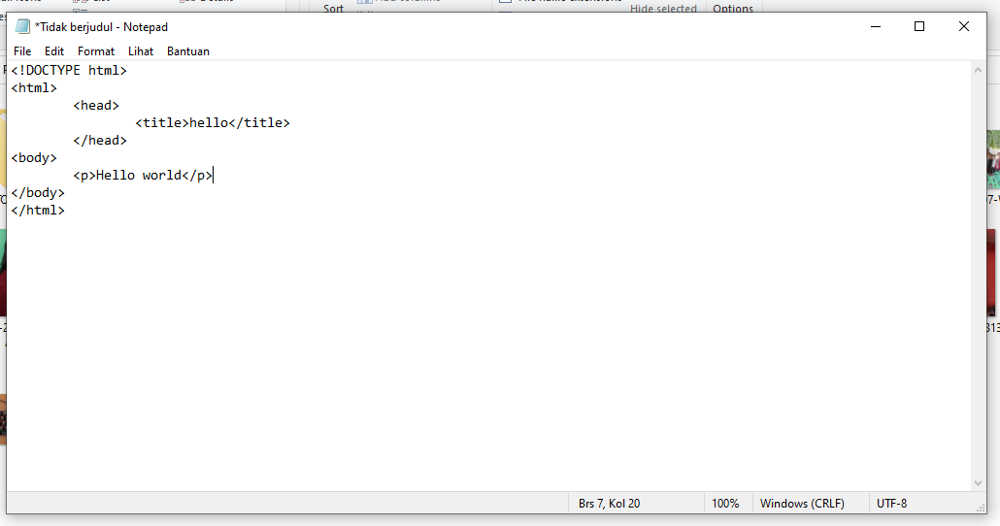
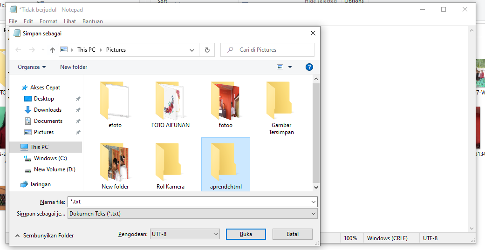
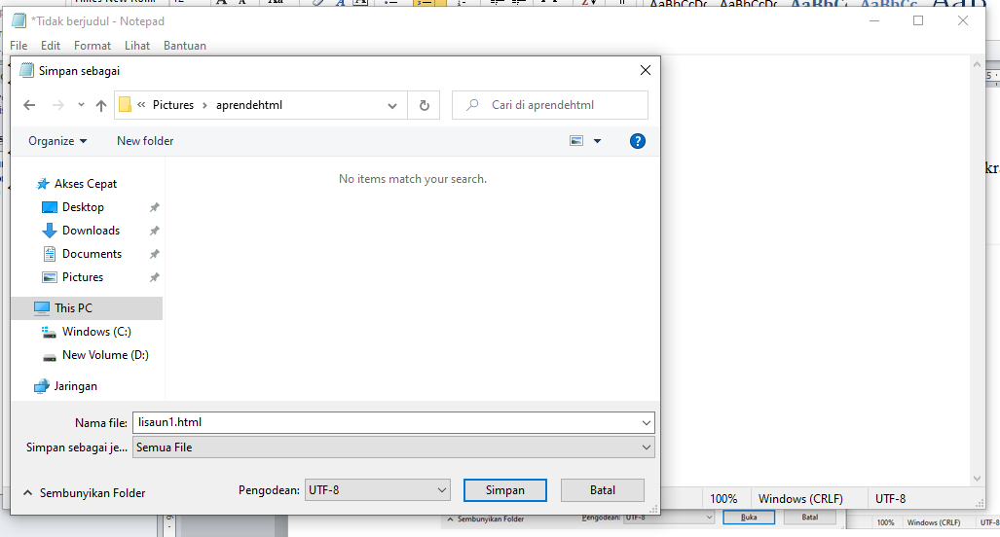
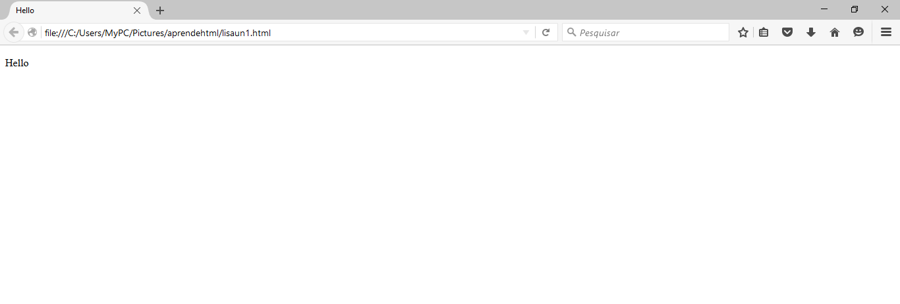

INTRODUSAUN
HTML nia signifika maka hypertet markup languange nebe mak ezisita hanesan textu digial ida hodi halo website nia estrutura sira.
Html mos iha versaun oin oin nebe mak hetan update foun no kontinuasaun to era agora,
HTML halo husi Tim Berners 1991 nebe mak dahuluk uza iha kantor CNER no tuir mai
nia publika ba publiku iha tinan 1992 iha nasaun Amerika
Html ni file exntesion mak .html nebe bainhira iha nia extension ita sei hare website
sira nebe mak ita kria ona .
Iha momentu neba Tim Bernes funda html ho WWW ou world wide web
atu nune bele hafasil funsionariu sira iha CNER atu halo
arkivu ba dokumentus no hafasil sira atu foti ou edit dokumentus ruma no
atu sira labele lao preokupadu liu tan.
WWW hahu uluk husi nasaun Amerika nebe mak user ka ema barak mak uza no interese tebes atu uza
iha era neba, ho www hafasil ema barak atu hetan dokumentus musika nsst.
No komesa ona hetan uptdate versaun husi html ninian to agora
Tuir mai ita aprende husi baziku :
1.Loke Notepad hakerek code iha kraik ne no hakerek code tuir mai ne

2.CTRL + SHIFT + S atu rai ita nia code iha notepad
no halo folder foun ida tau naran hanesan iha imagen kraik ne

3.Bainhira fo sai setting hanesan iha kraik ne no simpan ou save

4.Bainhira rai ona ba loke fale folder no file nebe mak ita rai
ona no nia rezultadu mak hanesan ne
